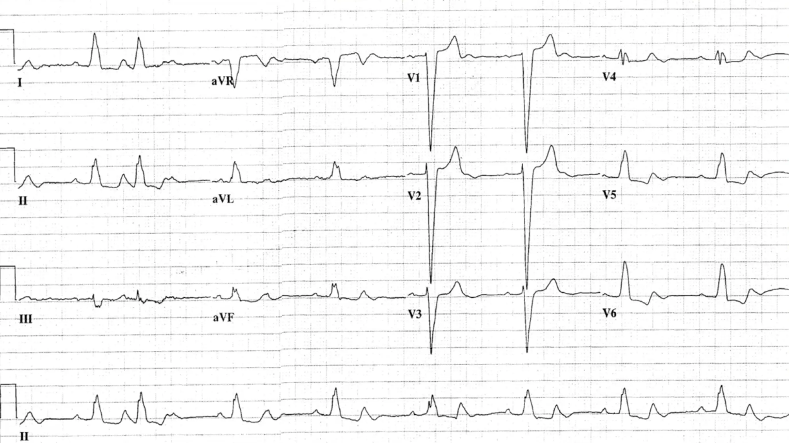
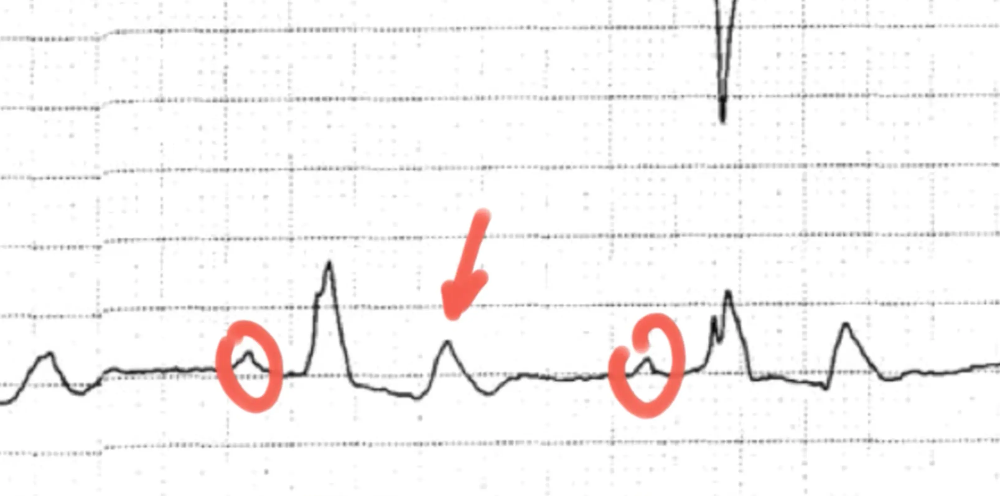

Fall 2
Eine 65-jährige Frau stellt sich nach einem präsynkopalen Ereignis in der Notaufnahme vor.
EKG

Befund der Ärzte: Sinusrhythmus, Linksschenkelblock, supraventrikuläre Extrasystolen. Die Patientin sollte kardiologisch abgeklärt werden. Während sie auf eine nicht-dringliche Untersuchung wartete, entwickelte sie einen AV-Block III. Grades und verstarb noch in der Notaufnahme. Als die diensthabenden Ärzte sich das EKG erneut ansahen, bemerkten sie den Fehler.
Herzrhythmusstörungen
Von einer Herzrhythmusstörung spricht man, wenn das Herz zu schnell, zu langsam und/oder unregelmäßig schlägt. Rhythmusstörungen entstehen durch eine gestörte Erregungsbildung (z.B. ein ektoper
Fokus) oder eine gestörte Erregungsleitung (z.B. kreisende Erregungen oder AV-Blockierungen). Strukturelle Veränderungen und äußere Faktoren wie Fibrose, Ischämie oder Elektrolytstörungen können
sie begünstigen.Im oben beschriebenen Fall, verstecken sich in den T-Wellen weitere P-Wellen: Es handelt es sich demnach um einen AV-Block mit 2:1
Überleitung!
Durch ein unzureichendes HZV sind klassische Symptome der Herzinsuffizienz möglich, bis hin zur Synkope, zum kardiogenen Schock oder sogar zum plötzlichen Herztod.
Aus diesem Grund ist es enorm wichtig, nicht nur ST-Strecke und T-Wellen zu beurteilen, sondern auch den zugrunde liegenden Rhythmus!
Bix-Regel
Die Beurteilung von Rhythmen kann durchaus schwierig sein: Artefakte, Niedervoltage, eine unruhige Base Line oder unglückliche Zufälle wie im oben beschriebenen Fall (P-Welle in der T-Welle)
können die Analyse erschweren. Für solche Fälle gibt es unter anderem die Bix-Regel.
Liegt eine P-Welle genau in der Mitte zwischen zwei QRS-Komplexen oder T-Wellen, kann sich eine weitere P-Welle im QRS-Komplex oder in der T-Welle verbergen. Da Vorhofaktionen in der Regel
regelmäßig auftreten, lohnt sich bei der ersten Beurteilung immer ein Blick genau in die Mitte zwischen zwei sichtbaren P-Wellen. Im obigen Fall liegt genau
in der Mitte die T-Welle; da T-Wellen physiologischerweise rund sind, ist eine spitzzulaufende T-Welle ein.
